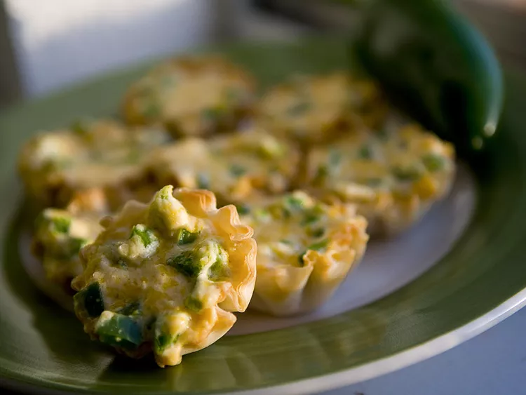

Jalapeno Popper Cups

Description
Jalapeno poppers filled with soft cream cheese, cheddar cheese, and bacon bits, then formed within tart shell
cups.
Ingredients
- 12 mini phyllo tart shells
- 4 ounces cream cheese, softened
- ½ cup shredded Cheddar cheese
- 2 jalapeno peppers, seeded and chopped
- 1 tablespoon hot pepper sauce
- bacon bits
Steps
- Preheat an oven to 350 degrees F (175 degrees C). Place phyllo cups onto a baking sheet.
- Stir together cream cheese, Cheddar cheese, jalapenos, and hot sauce in a bowl. Spoon mixture into
phyllo cups. Sprinkle bacon bits on top. Bake in preheated oven until golden brown, about 15 to 20
minutes. Serve warm.